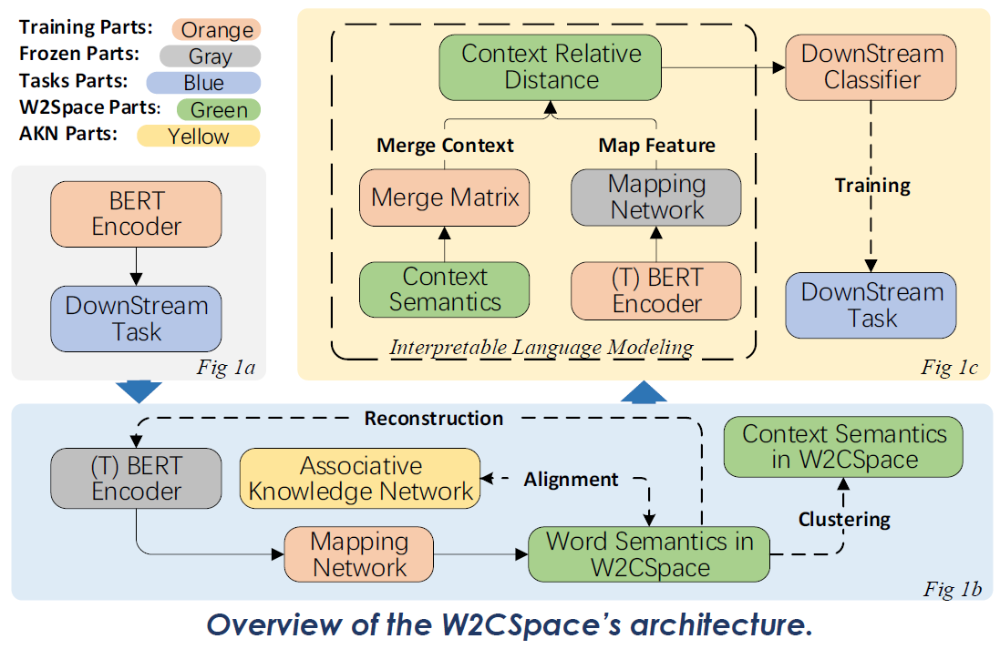
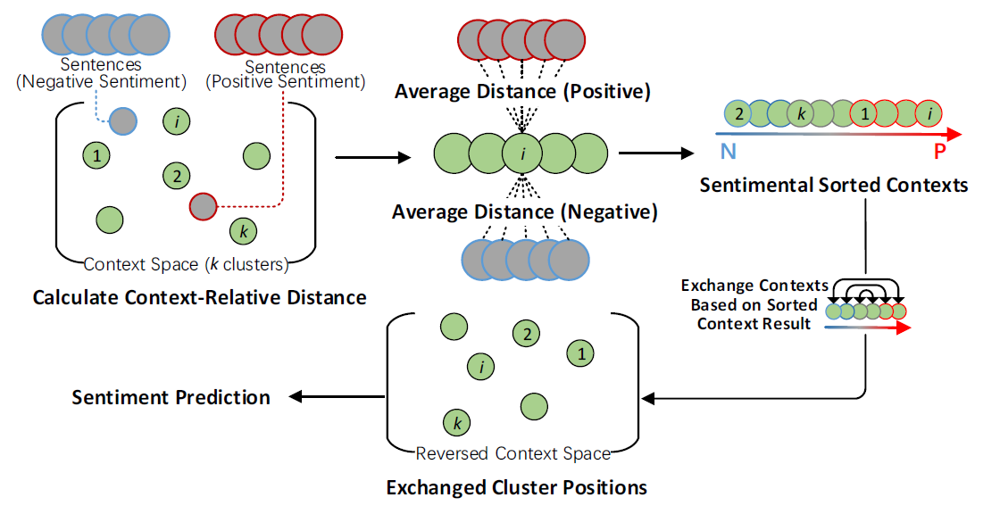

Accepted for ACL2023, Findings
ABSTRACT
As the foundation of current natural language processing methods, pre-trained language model has achieved excellent performance. However, the black-box structure of the deep neural network in pre-trained language models seriously limits the interpretability of the language modeling process. By revisiting the coupled requirement of deep neural representation and semantics logic of language modeling, a Word-Context-Coupled Space (W2CSpace) is proposed by introducing the alignment processing between uninterpretable neural representation and interpretable statistical logic. Moreover, a clustering process is also designed to connect the word- and context-level semantics. Specifically, an associative knowledge network (AKN, Li et al., 2022), considered interpretable statistical logic, is introduced in the alignment process for word-level semantics. Furthermore, the context-relative distance is employed as the semantic feature for the down-stream classifier, which is greatly different from the current uninterpretable semantic representations of pre-trained models. Our experiments for performance evaluation and interpretable analysis are executed on several types of datasets, including SIGHAN, Weibo, and ChnSenti. Wherein a novel evaluation strategy for the interpretability of machine learning models is first proposed. According to the experimental results, our language model can achieve better performance and highly credible interpretable ability compared to related state-of-the-art methods.
METHODOLOGY
-

- “Word-level semantics in W2CSpace is aligned with AKN distribution.”
- “Context abstraction is realized by 𝒌-means clustering with merge matrix.”
- “Input text are interpretably modeled based on context relations.”
The subfigs exhibit the training process for our interpretable language modeling method. (1a) The BERT encoder is firstly fine-tuned under the downstream task. We map the feature 𝐹𝐵 from fine-tuned BERT encoder to the word elements 𝐶 in W2CSpace ("T" refer to "trained"); (1b) After the training of the mapping network with a reconstruction and alignment task, the word semantics are clustered to high-dimensional context semantics 𝑋 ; (1c) During interpretable language modeling process, the context semantics inW2CSpace is gradually optimized by multiplying the merge matrix. 𝑀M We compute the context-relative distance of the mapped feature C within the optimized context ത𝑋 for the downstream task.
W2CSpace aims to realize interpretably language modeling by introducing context-aware language representations. The word-level semantics, mapped from BERT representations with a mapping network, are aligned with introduced statistical AKN distribution. With the training process for alignment process, the interpretable knowledge is ingested into mapped representations on word-level.
Humans are able to recognize emotion from language, action, and so on (Barrett et al., 2007). Specifically, in linguistics, humans recognize emotion with the context in the given sentences. We use 𝒌-means clustering process based on cosine distance for abstract context-level semantics from word-level semantics. A merge matrix is introduced on the clusters to establish the communication between different clusters, which reduce the impact of the 𝑘 number in 𝑘-means for reasonable clustering process.
The input text are firstly mapped into word-level semantics in W2CSpace, and calculate the cosine distance with the context clusters, which named contextrelative distance. Context-relative distance is able to directly feed into downstream classifier in fine-tuning tasks with minimal modification.
PERFORMANCE AND INTERPRETABILITY RESULTS
- "Outstanding performance on token- and sequence-classification"
- "Interpretable analysis procedure based on sentiment classification." 
The performance evaluation compose of Chinese spelling correction and Chinese sentiment classification tasks. In Chinese spelling correction task, W2CSpace outperforms most of the baselines both on word- and sentence-level, including SpellGCN (Cheng et al., 2020), HeadFilt (Nguyen et al,. 2021) and so on. The SOTA classification performance of W2CSpace in Chinese sentiment classification demonstrate that, our method can precisely modeling the text with an interpretable representation.
Additionally, we also investigate the analysis on the influence of space dimension size 𝑛 and cluster number 𝑘 for W2CSpace. In conclusion, benefits from the introduction of the merge matrix, W2CSpace achieves similar performance on difference settings.
As the context clusters are swapped with predicted sentimentally-opposite labels in the interpretable analysis, most of the predicted sentiments are reversed (over 96%). The changes of corresponding sentimental classification results reflects the appropriateness of W2CSpace.